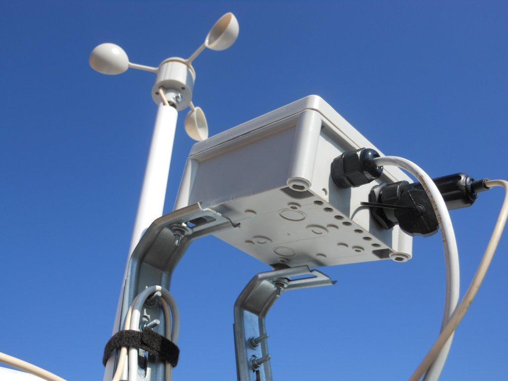


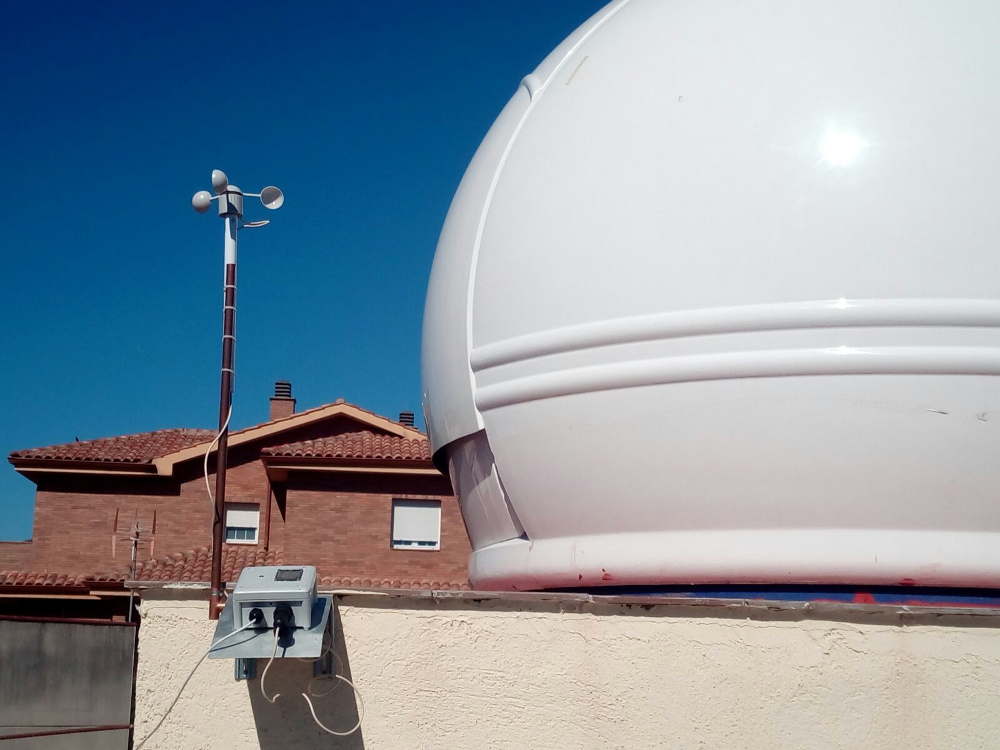

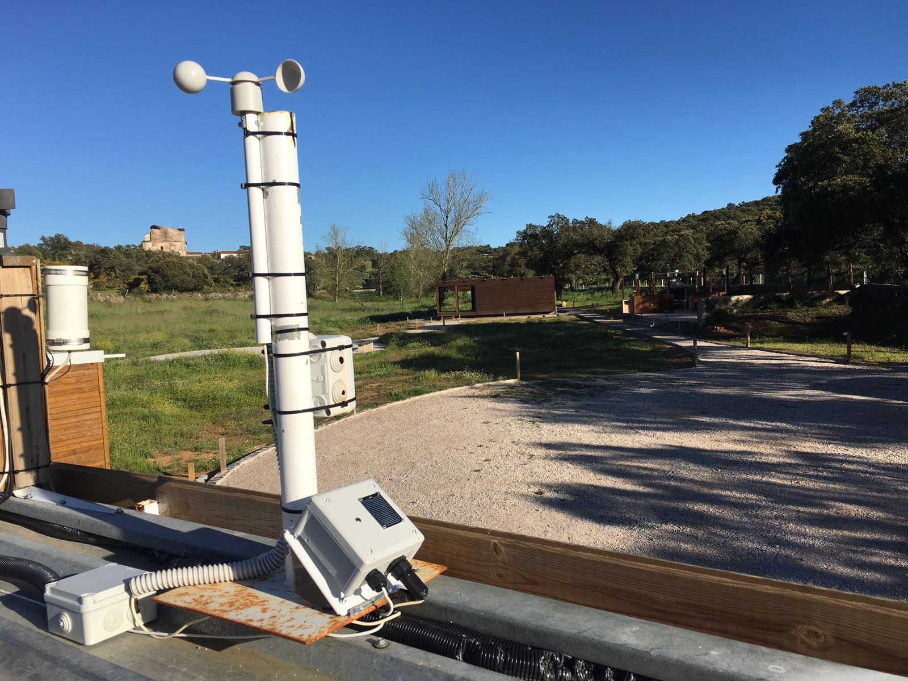
|
Meteo Watcher II |
|
|
|
|
| Meteo Watcher II es un monitor meteorológico para observatorios astronómicos. Ha sido diseñado para controlar la seguridad del observatorio mientras está operativo, ya sea gestionado de manera presencial o remota. Es el único dispositivo de este tipo que opera de manera autónoma, analizando los parámetros climatológicos y decidiendo si debe permanecer abierto o no el observatorio. Monitoriza los principales parámetros ambientales relevantes en astronomía: Nubosidad, Temperatura ambiente, Humedad, Punto de Rocío, Luminosidad, Lluvia y Viento. Meteo Watcher II no debe entenderse como una estación meteorológica al uso. |
|
|
|
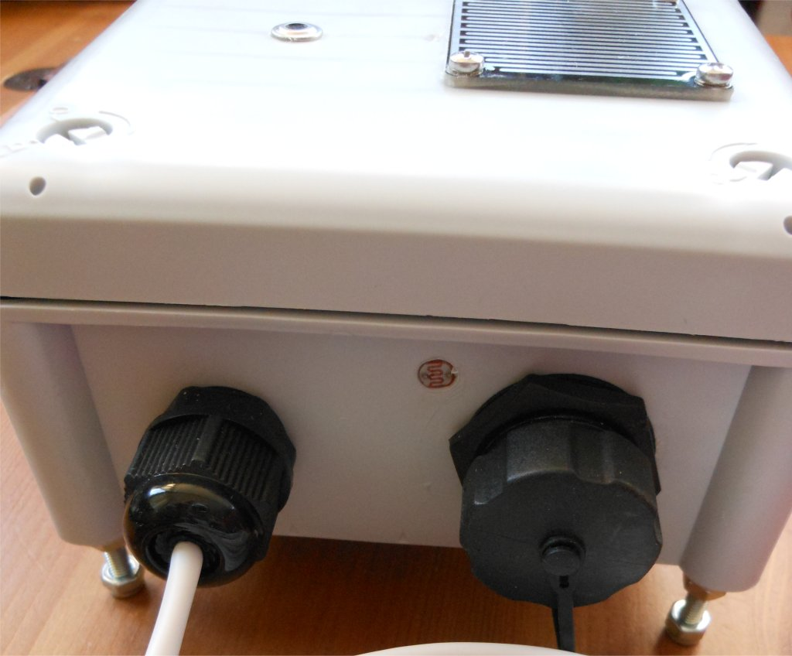 | 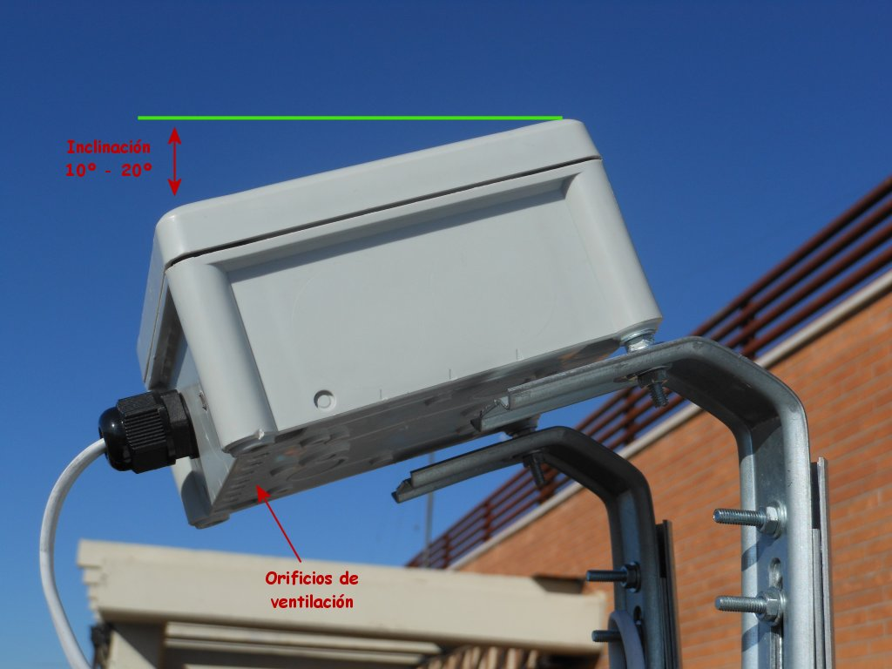 |
|
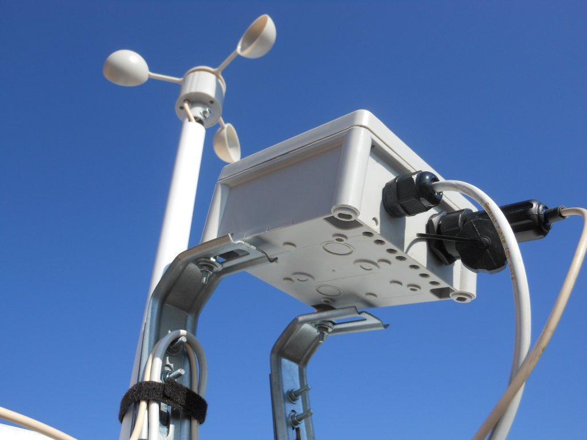 |
|
|
|
|
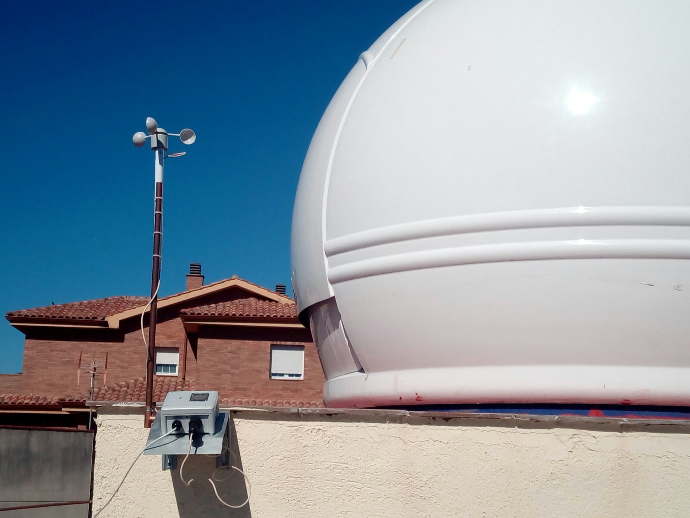 |
|
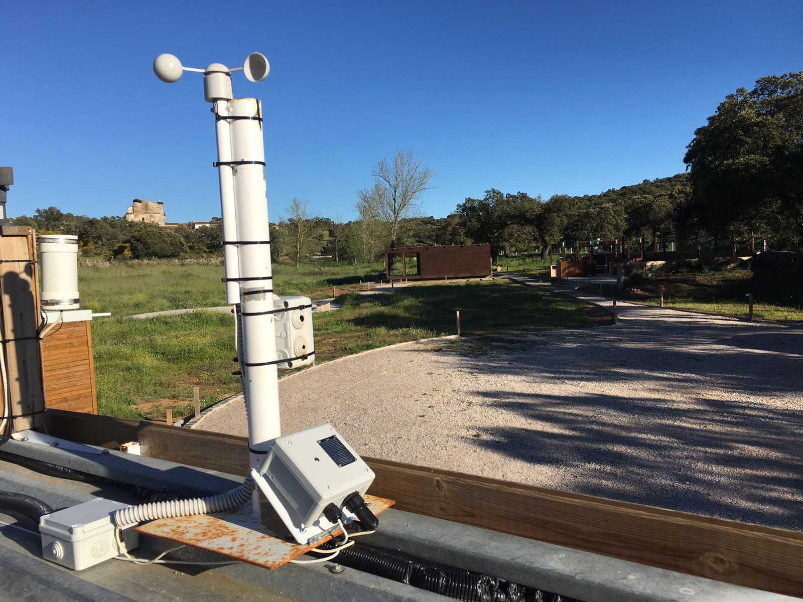 |
|
| Meteo Watcher II se monta en
una caja PVC
de 102mm X 102mm X 56mm y con grado de protección IP66. 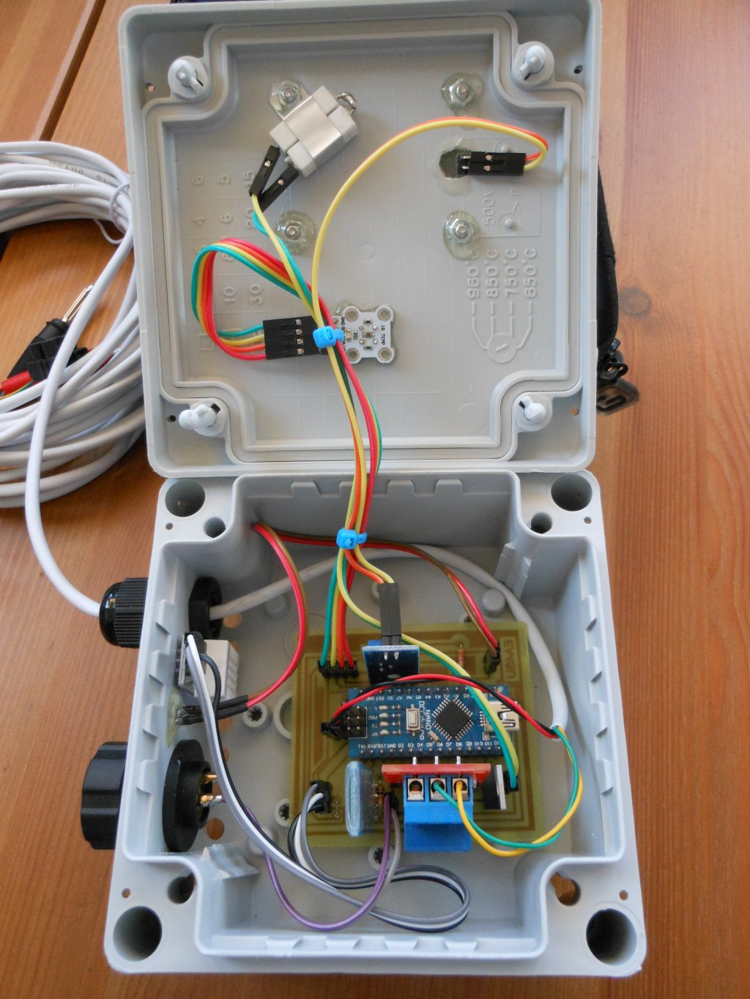 En su diseño se ha buscado practicidad y operatividad, proporcionando información en tiempo real de manera gráfica o procesable con posterioridad mediante un fichero CSV. Meteo Watcher II dispone de una salida de relé que permite actuar sobre otros dispositivos y/o alarmas, en el caso de que las condiciones de uso del observatorio no sean seguras. Las comunicaciones entre el ordenador de control del observatorio y el Meteo Watcher II se pueden realizar bien mediante línea RS-232 o bien mediante tecnología Bluetooth, dependiendo del modelo que se disponga. MeteoWatcher II sólo proporciona una de estas dos modalidades de conexión. En el caso de usar RS-232 (conector DB9) es necesario llevar un cable de 6 hilos: 2 para las comunicación RS-232, 2 para la alimentación a 12V y 2 que corresponden a la salida del relé que permite interactuar con los sistemas de alarma u otro dispositivo que atienda la apertura/cierre del observatorio En el caso de optar por Bluetoooth sólo es necesario llevar un cable de 2 pares de hilos hasta el observatorio: Un par de hilos destinados a proporcionar alimentación a 12V, y otro par de hilos destinados a conducir la salida del relé que permitirá interactuar con sistemas de alarma u otro dispositivo que atienda la apertura/cierre del observatorio. La distribución Bluetooth del Meteo Watcher II incluye un adaptador USB Dongle CRS 4.0 (con sus correspondientes drivers y software de implementación del protocolo de Bluetooth) por si el ordenador que se va a utilizar no dispone de Bluetooth. Meteo Watcher II no depende de un ordenador para operar y gestionar la seguridad del observatorio. Una vez configurado, éste trabaja de manera autónoma, analizando las medidas medioambientales y decidiendo en base a la configuración establecida si debe seguir o no abierto el observatorio. El programa de configuración y monitorización permite al usuario controlar en tiempo real los valores medioambientales y configurar el comportamiento del Meteo Watcher II. Además, proporciona un medio de interconexión compatible con el modo Boltwood/Clarity II Remote, por lo que le permite interactuar con la mayoría de los programas destinados a la automatización de observatorios, como puede ser CCD Commander o CCD Auto Pilot, además de ser compatible con ASCOM Safety Monitor. Tanto la información telemétrica proporcionada en la ventana principal y en el registro de intercambio de información con otros programas se actualiza cada 30 segundos. Meteo Watcher II es un dispositivo de medición de parámetros medioambientales, que lejos de ser absolutos, son dependientes del lugar de instalación y época del año en la que nos encontremos, por lo que será necesario realizar ajustes en los parámetros hasta disponer de una configuración acorde a nuestra ubicación geográfica. En cualquier caso, Meteo Watcher II no es una estación meteorológica y no debe usarse como tal. Entre otras funciones, controla la humedad y la temperatura ambiente, y por tanto conoce la temperatura de rocío (punto de rocío). Esto facilita configurar las alertas para que se cierre el observatorio en caso de alcanzar una humedad límite o que la temperatura de rocío se acerque demasiado a la temperatura ambiente. En ocasiones se cuida mucho el rocío en las lentes, pero se olvida que puede ser también muy dañino en la electrónica que rodea a nuestro telescopio (ordenadores, cámaras, enfocadores, etc). E incluso que debido al hielo sea imposible cerrar el observatorio. Meteo Watcher II dispone de un calefactor interno que actúa bajo el sensor de lluvia. Activándolo podremos eliminar la humedad del rocío y escarcha, o en su caso evitar que se forme. Puede funcionar de manera automática, activándose en cuanto detecta agua el sensor de lluvia y desactivándose cuando desaparece. También es posible activarlo manualmente. En cualquiera de los casos podremos fijar el porcentaje de potencia que se desea aplicar. El 100% de la potencia, alimentando a 12v es de 2.5W. 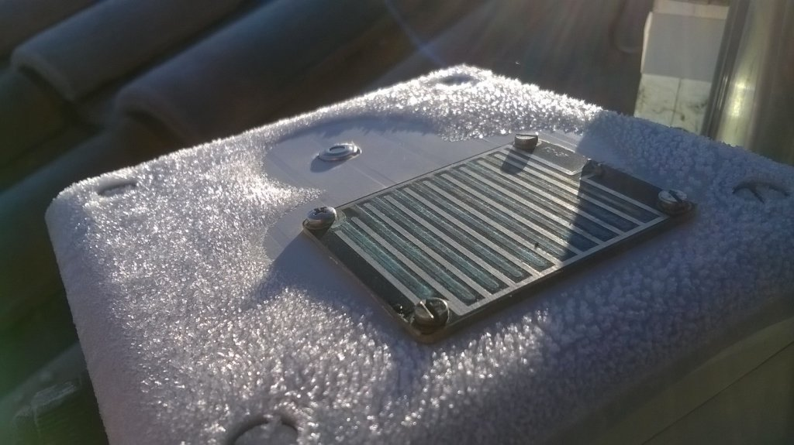
Meteo Watcher II está compilado en .NET 4.0, por lo que es posible compatible con Windows XP, 7, 8, 8.1 y 10. Al mismo tiempo, ha sido programado para que la interpretación del separador de decimales, ya sea coma o punto, no sea un problema y se adapte a la configuración regional del sistema donde se ejecuta. |
Opcionalmente se puede
conectar a Meteo Watcher II un anemómetro. Cualquiera que funcione por pulsos (relé
reed).
En concreto se utiliza el anemómetro que se ve en las fotos. Es un modelo básico, económico y fiable, que se utiliza en numerosas estaciones meteorológicas y que proporciona un resultado muy satisfactorio. Este anemómetro se compra como elemento de sustitución de una estación meteorológica, por lo que viene sin báculo y el cable que trae es extremadamente corto. Esto obliga a tener que desarmarlo por completo para soldar un cable más largo (2 mts). Respecto al báculo, he ideado una solución simple y eficaz, que permite sujetar el anemómetro de manera sencilla. El anemómetro se conecta al Meteo Watcher II a través de un conector estanco, que se proporciona junto con la opción del anemómetro. El Meteo Watcher II ya incluye en la caja el conector hembra donde enchufar el anemómetro, como puede verse en las fotos anteriores. |
| Medidas de seguridad
que proporciona Meteo Watcher II
|
Dado que el dispositivo opera de manera autónoma, sin necesidad de estar conectado a ningún ordenador, no necesita medidas de verificación de presencia de segundos dispositivos, como pudiera ser un ordenador de control. Una vez se enciende el Meteo Watcher II, éste comenzará a realizar las medidas de los parámetros climatológicos y a tomar decisiones. |
| Instalación de Meteo Watcher
II
|
Descomprima el fichero MeteoWatcherII-v2.1.5.zip en un directorio temporal y ejecute setup.exe para proceder a la instalación. El ejecutable MeteoWatcherII se instalará en la carpeta del sistema Archivos de programa. En la carpeta Documentos del usuario se creará la carpeta MeteoWatcherII, donde se crearán todos los ficheros relacionados con la aplicación. Si dispone de la opción Bluetooth, la clave de conexión como dispositivo Bluetooth es 1234. Si necesita ayuda para configurar el dispositivo Bluetooth pulse aquí. La primera vez que ejecute el programa MeteoWatcherII.exe creará el fichero MeteoWatcherII.ini con una configuración estándar que posteriormente podrá modificar desde el propio programa desde las pestañas Alertas y Configuración. Sólo se le pedirá indique el puerto serie con el que se conectará. En le caso de disponer de la opción Bluetooth el puerto se creará en el momento de establecer el vínculo Bluetooth. El dispositivo Meteo Watcher II deberá ponerse en una ubicación despejada del observatorio, aunque suficientemente cercana para que se mantenga el enlace Bluetooth si fuese el caso, siendo muy importante que tenga una ligera inclinación para evitar se retenga agua en la parte superior del mismo, conforme se puede ver en fotos anterior. |
| Información
proporcionada por el programa
de control del Meteo Watcher II 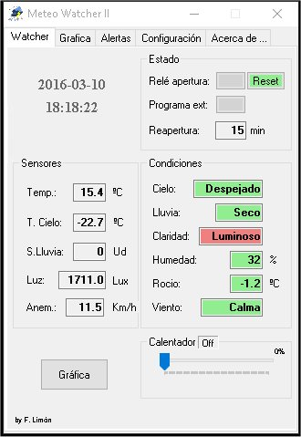
|
| Cuando se inicializa el
programa, se muestra la ventana principal.
Tenga en cuanta que los datos de telemetría y configuración residen en el dispositivo Meteo Watcher II, por lo que cada vez que se solicitan telemetrías o parámetros de configuración, el programa debe solicitar éstos al Meteo Watcher II para poder visualizarlos. Esta operación, dependiendo de las circunstancias puede llegar a tardar hasta seis segundos. Si todo es correcto y una vez se ha establecido la comunicación con el MeteoWatcherII se visializarán los datos de telemetría. En el caso de que se haya establecido la ejecución en modo minimizado, el programa se minimiza y aparecerá en el System Tray el icono de Meteo Watcher II con la marca verde y una notificación como la siguiente:
En cualquier momento, si damos un doble click con el botón izquierdo del ratón sobre el icono, la aplicación volverá a ejecutar en modo normal y se podrán ver los valores de todos los sensores y condiciones climatológicas que Meteo Watcher II monitoriza. En el caso de que el programa de control detecte problemas en las comunicaciones, aparecerá un mensaje similar al anterior indicando Reiniciando Comunicación, poniéndose el icono de la barra de tareas (System Tray) con la marca roja. 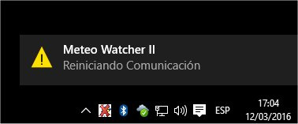 En el momento de restablecer las comunicaciones nos lo indicará con otro mensaje indicando Recuperada Comunicación, poniéndose nuevamente el icono de la barra de tareas (System Tray) con la marca verde. 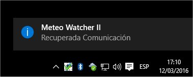
Si minimizamos la ventana del programa de control, éste continuará trabajando en modo minimizado, conforme se ha explicado anteriormente. Volviendo a la ventana en tamaño normal, en la zona superior izquierda se muestra la fecha y hora en la que se realizó la última actualización de datos. En la zona superior derecha se muestra el estado de Relé de apertura, con el que se indica si las condiciones ambientales son adecuadas para operar el observatorio (botón en color verde) y por tanto el relé estará inactivo, o si por el contrario no se cumplen las condiciones para operar de manera segura (botón en color rojo) y el relé en este caso estará activo. En el caso de haberse inhibido el relé, el botón aparecerá en color gris. Además del relé, siempre que tengamos ejecutando el programa de control, es posible configurar Meteo Watcher II para que ejecute un Programa externo (*.bat, *.exe o *.vbs) en el caso de que las condiciones ambientales no sea adecuadas. Al igual que con el Relé de apertura, el botón estará en verde si las condiciones son adecuadas y el programa no se ha ejecutado o se ha cumplido el periodo de tiempo de Reapertura , en rojo en caso de incidencia y por tanto haberse ejecutado el programa, o en gris en caso de no estar activa dicha opción. En caso de alerta, primero se ejecutará el programa externo, y una vez finalizado, se activará el relé de cierre. Esto permite, por ejemplo, ejecutar un script VBS (POTH_Park_Telescope.vbs) que se conecta con el telescopio a través de POTH para dar la orden de aparcar el telescopio, y posteriormente mediante el relé, iniciar el cierre del observatorio. En el campo Reapertura se indican los minutos restantes para que todos los mecanismos de seguridad activados indiquen que es posible abrir el observatorio: relé, campos de Cierre del observatorio o Alerta del fichero MeteoWatcherII.dat. Esta cuenta atrás se inicia en el momento en el que se desactivan todas las alarmas. El botón Reset permite indicar a Meteo Watcher II que en el próximo ciclo, si las condiciones lo permiten, ponga a cero el contador de tiempo para la Reapertura . Cuando se pulsa el botón se pone en color rojo. Una vez se ha evaluado la petición, éste vuelve a ponerse en verde. Es de utilidad si estando inhibida la apertura del observatorio (Relé de apertura en rojo) modificamos algún valor en la configuración o en las alertas.
En la zona izquierda, que corresponde a los valores proporcionados por alguno de los sensores, tenemos: Temp.: Temperatura ambiente. T.Cielo: Temperatura del Cielo medida por el sensor de nubes. Cuanto más despejado esté el cielo menor será la temperatura medida. Usaremos este valor para ajustes de configuración. S.Lluvia: Indica el valor (entre 0 y 100) que proporciona el sensor de lluvia. Usaremos este valor para ajustes de configuración. Luz: Representa una aproximación en Lux de la luminosidad que está midiendo el sensor de luz. Anem.: Velocidad del viento medida en Km/h. Se realiza una lectura cada 30" y se muestra el valor medio de las tres últimas mediciones.
En la zona derecha, que corresponde a las Condiciones climatológicas y ambientales, tenemos: Cielo: Indica el nivel de nubosidad y depende directamente de la Temperatura del Cielo. Indicará valores de Despejado o Nublado. Lluvia: Se activa cuando el sensor de lluvia detecta la presencia de agua indicando Seco o Lluvia. Claridad: Indica el nivel de luminosidad existente. Los valores son: Oscuro o Muy claro. Humedad: Humedad relativa. Rocío: Temperatura a partir de la cual empieza a condensarse el vapor de agua contenido en el aire. Viento: Se activa si la velocidad del viento alcanza el umbral indicado, pudiendo mostrar Calma o Fuerte.
Calentador: Es un control deslizante que permite activar el calefactor de manera manual, indicando que porcentaje de potencia debe utilizarse. Cuando el calentador se activa de manera automática se ve reflejado en este indicador marcando el porcentaje de la potencia empleada.
En la zona inferior izquierda tenemos el botón Gráfica, que nos permitirá visualizar con total comodidad la evolución de todos las variables monitorizadas por el Meteo Watcher II a lo largo de las últimas 24 horas. Al pulsarlo se abrirá una nueva ventana como ésta: 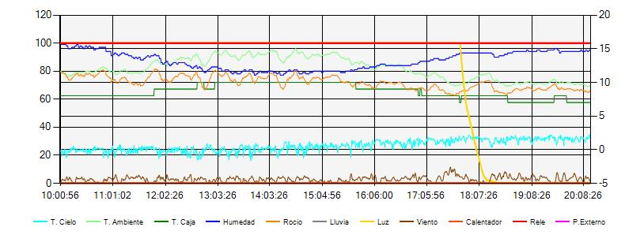 En el caso de que la ventana permanezca abierta, ésta se actualizará automáticamente cada 5 minutos. Si se pulsa el botón Gráfica estando la ventana abierta se producirá un refresco de las gráficas a ese instante. Cuando se abre la ventana de gráficos, o cuando ésta se regenera automáticamente cada cinco minutos, se crea/actualiza automáticamente el fichero MeteoWatcherII.jpg con una copia de dicha gráfica. Lo que nos permitirá empotrarla en una página web o en otro tipo de servicio. Los valores de Humedad, Lluvia, Luz, Relé y P. Externo se visualizan en una escala comprendida entre 0 y 100, por lo que utilizan el eje de ordenadas (Y) de la izquierda. Los valores de T. Cielo, T. Ambiente, T. Caja, Rocío y Viento utilizan el eje de ordenadas (Y) de la derecha. Los datos visualizados son los mismos que se almacenan en formato CSV, por lo que para estudios más profundos y detallados recomiendo utilizar directamente una hoja de cálculo. |
| Gráficas del Meteo
Watcher II 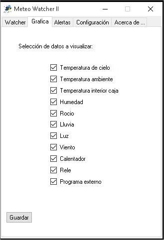 Como se ha indicado previamente, Meteo Watcher II puede mostrar de modo gráfico todos los parámetros que monitoriza. En la ventana Grafica podemos seleccionar qué parámetros queremos que se muestren gráficamente. |
| Alertas
de
Meteo Watcher II 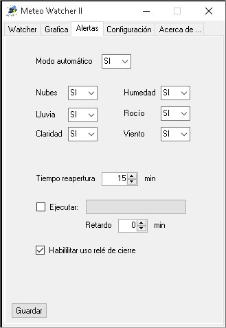
|
|||||||||||||||||||||||||||||||||||||||||||||||||||
| Recuerde que la
configuración residen en el dispositivo Meteo Watcher II, por lo que cada
vez que se solicitan parámetros de configuración, el programa debe solicitar
éstos al Meteo Watcher II para poder visualizarlos. Esta operación,
dependiendo de las circunstancias puede llegar a tardar hasta seis segundos. En la ventana de Alertas se definirá qué parámetros queremos controlar para operar con el observatorio. Modo automático:
Cielo
Lluvia
Claridad
Humedad
Rocío
Viento
Tiempo reapertura
Ejecutar programa externo
Habilitar relé de cierre
Una vez ajustados los parámetros de alerta debe pulsar el botón Guardar para que se almacene en el propio Meteo Watcher II la configuración establecida. |
| Configuración
de
Meteo Watcher II 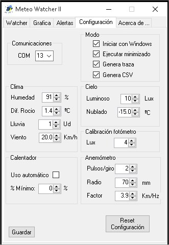
|
||||||||||||||||||
| Recuerde que la
configuración residen en el dispositivo Meteo Watcher II, por lo que cada
vez que se solicitan parámetros de configuración, el programa debe solicitar
éstos al Meteo Watcher II para poder visualizarlos. Esta operación,
dependiendo de las circunstancias puede llegar a tardar hasta seis segundos. En la ventana de Configuración es donde se definen los valores de los parámetros que fijarán el funcionamiento del Meteo Watcher II. COM: Una vez emparejado el Meteo Watcher II a través del interfaz de Bluetooth, indicaremos en este campo el puerto serie asignado para las comunicaciones con él. Humedad: Indicaremos el umbral de humedad relativa máximo a partir del cual se entiende hay demasiada humedad ambiente y es perjudicial para el equipo o perjudica notablemente las observaciones. Si se sobrepasa este umbral se indicará en los campos W y r del fichero MeteoWatcherII.dat (que se describe posteriormente) como humedad alta. Diferencial de Rocío: Fijaremos el diferencial mínimo admisible en grados centígrados entre la temperatura ambiente y el punto de rocío. Por debajo de ese diferencial se entiende que hay excesivo peligro de condensación. Si se sobrepasa este umbral se indicará en los campos W y r del fichero MeteoWatcherII.dat (que se describe posteriormente) como humedad alta. Lluvia: Los valores de este parámetro pueden variar entre 0 (totalmente seco) y 100 (sumergido en agua). Fijaremos para este parámetro el valor a partir del cual entendemos que hay lluvia. Hay que recordar que este es el valor que usará el Meteo Watcher II para activar el calentador anti rocío, por lo que puede que nos interese poner un nivel bajo, de forma que el calentador se encienda en cuanto detecte la más mínima presencia de agua. Viento: Valor a partir del cual se entiende que pasa de calma a viento fuerte, que impide mantener abierto el observatorio. Claridad: El valor de este parámetro pueden variar entre 0 (totalmente oscuro) y >7000 (máxima luminosidad) y representa el valor en Lux por debajo del cual se entiende que se ha alcanzado un nivel razonable de oscuridad. Nubosidad: Los valores de temperatura del cielo pueden variar desde valores positivos en caso de mucha nubosidad a valores negativos en caso de cielos despejados. Cuanto más despejado más negativa será la temperatura del cielo. Este valor determina el límite de temperatura del cielo a partir del cual, en sentido descendente de valor, se entiende que el cielo pasa a estar nublado. Calibración fotómetro: Este parámetro permite calibrar la sensibilidad del medidor de luz, posibilitando que tengamos mediciones de cero en condiciones de oscuridad, Es un valor, en Lux, que se restará siempre a la lectura que proporcione el detector de luminosidad. Anemómetro: Para realizar una razonable caracterización del anemómetro necesitamos conocer y especificar estos parámetros.
Calentador: Meteo Watcher II proporciona la facilidad de poder indicar que el calentador funcione de manera automática, especificando un % mínimo de funcionamiento. Si el mínimo es cero: entonces sólo se encenderá el calefactor si el sensor de lluvia alcanza el umbral que se ha definido para Lluvia. En el caso de que el mínimo sea mayor que cero: entonces siempre estará operativo el calefactor, estando como mínimo al tanto por ciento mínimo fijado, aunque el sensor de lluvia marque cero. El porcentaje de potencia aplicada en el calefactor variará de manera automática en función de lo que indique el sensor de lluvia, alcanzando el 100% de su potencia cuando el sensor de lluvia alcance el valor de 20 o superiores.
En el bloque de opciones que permiten el modo de funcionamiento tenemos:: Iniciar con Windows: Se indica a Meteo Watcher II que debe realizar la configuración necesaria en el sistema para que éste se arranque automáticamente al iniciar el sistema operativo. Ejecutar minimizado: Se indica a Meteo Watcher II que debe ejecutar en modo minimizado, mostrando únicamente el icono en la barra de tareas (System Tray). De esta manera, una vez establecida la conexión con el dispositivo, el programa pasa automáticamente a ejecutar en modo minimizado. Genera traza: Se indica a Meteo Watcher II que genere el fichero MeteoWatcherII.log, en el mismo directorio donde se encuentre instalado, en el que irá almacenando toda la información relativa a las operaciones que va realizando. Normalmente estará desactivado. Genera CSV: Se indica a Meteo Watcher que almacene en el fichero MeteoWatcherII.csv (ubicado en el mismo directorio donde se encuentre instalado) todos los valores leídos en formato CSV. Lo que permitirá analizar con una hoja de cálculo la evolución de los mismos y de este modo refinar el ajuste del sistema.
Una vez ajustados los parámetros de configuración debe pulsar el botón Guardar para que se almacene en MeteoWatcherII.ini la configuración establecida.
Algunas consideraciones sobre el uso del calentador. Es posible que bajo condiciones de humedad extrema se puedan obtener falsas lecturas de lluvia, al depositarse gran cantidad de agua sobre el sensor de lluvia. Incluso si la temperatura es muy baja este agua puede llegar a convertirse en escarcha o hielo. Meteo Watcher II incorpora un calentador que actúan sobre el sensor de lluvia, evaporando el agua que pudiera haberse depositado sobre él. El calor generado por el calefactor provoca una alteración en las medidas de temperatura, humedad relativa y por tanto sobre el dato del punto de rocío. El efecto provocado por el calefactor puede generar medidas erróneas de estos parámetros. Por lo que es muy aconsejable no olvidar esta circunstancia.
Algunas consideraciones sobre la configuración y precisión del anemómetro. Aunque es posible ajustar el anemómetro para que proporcione una medida bastante exacta de la velocidad del viento, no hay que olvidar que se trata de saber cuándo hay poco o mucho viento como para poder abrir o cerrar el observatorio. Una vez ajustado el anemómetro, y con las velocidades de viento relativas que nos proporcione, deberemos determinar de forma experimental qué entendemos por viento fuerte, y con ese valor ajustaremos la alerta del Meteo Watcher II.
|
| Especificación del
fichero MeteoWatcherII.dat
|
||||||||||||||||||||||||||||||||||||||||||||||||||||||||||||||||||
| Es el fichero de intercambio
de información con otros programas. Se sigue el formato definido por Cyanogen para el Cloud Sensor II en claritymanual.pdf (Cap. 17). Siendo el separador de decimales, independientemente de la configuración regional, el punto. 2015-02-01 20:43:50.00 C K -8.7 6.8 8.0 17.5 43 -4.9 0 0 0 00030 042034.86377 3 2 1 1 1 1
|
| Especificación del
fichero MeteoWatcherII.csv
|
||||||||||||||||||||||||||||
| Es un fichero en formato CSV
e importable directamente desde Excel. La descripción de los campos,
separados por ";", es la siguiente: 2015-02-01;12:29:07;-26.2;15.94;12.50;41;2.7;1023;1971.77;6.2;1
|
| Ejemplo de MeteoWatcherII.csv
|
Puede descargar el fichero MeteoWatcherII-20151114.csv que corresponde a un caso real entre el 14/NOV/2015 19:59 y el 15/NOV/2015 09:21 en donde fue imposible abrir el observatorio. Los ficheros CSV los puede abrir directamente con Excel, pudiendo elaborar resultados gráficos con los datos registrados. La gráfica generada por el programa de control del Meteo Watcher II fue la siguiente gráfica: 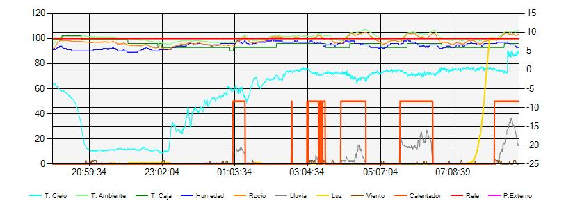 Al inicio de la sesión el cielo estaba nublado. Entre las 21 y las 23 horas (aprox.) despejó, con una temperatura de cielo inferior a los -22ºC. A partir de ese momento se fue nublando, hasta el punto de que a partir de las 01 horas se produjeron diversas lluvias, por lo que el calentador se activó al 50% de la potencia. En cualquier caso fue imposible abrir el observatorio por tener una humedad superior al 90% y una temperatura de rocío muy cercana a la temperatura ambiente. |
| Otras aplicaciones del
Meteo Watcher: ¡Monitorización de un eclipse solar!
|
| Aunque en mis planteamientos
al diseñar el Meteo Watcher no estaba usarlo para este tipo de trabajos, la
imaginación de sus propietarios es mucha, y ésta, por curiosa, he creído
interesante publicarla aquí. Miguel Rodríguez utilizó el sensor de luz del Meteo Watcher para monitorizar el eclipse parcial de Sol que tuvimos el pasado 20/MAR/2015. Con la información almacenada en el fichero de telemetrías en formato CSV ha obtenido esta magnífica gráfica, donde puede verse con total nitidez la variación de luminosidad medida durante el eclipse. 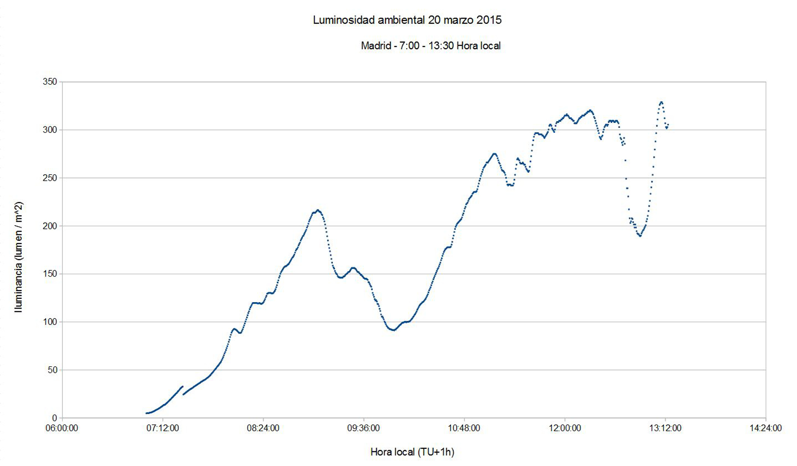 ¡Gracias Miguel por compartir esta idea e información! |
| Costes de realización
y direcciones de contacto
|
Los costes de realización del equipo (con portes a la península incluidos) son:
Si necesitas alguna aclaración, sugerencia o si tienes interés en disponer de un Meteo Watcher II, puedes contactar conmigo en: o puedes inscribirte en el grupo de Yahoo meteo-watcher : https://es.groups.yahoo.com/neo/groups/meteo-watcher/info
|